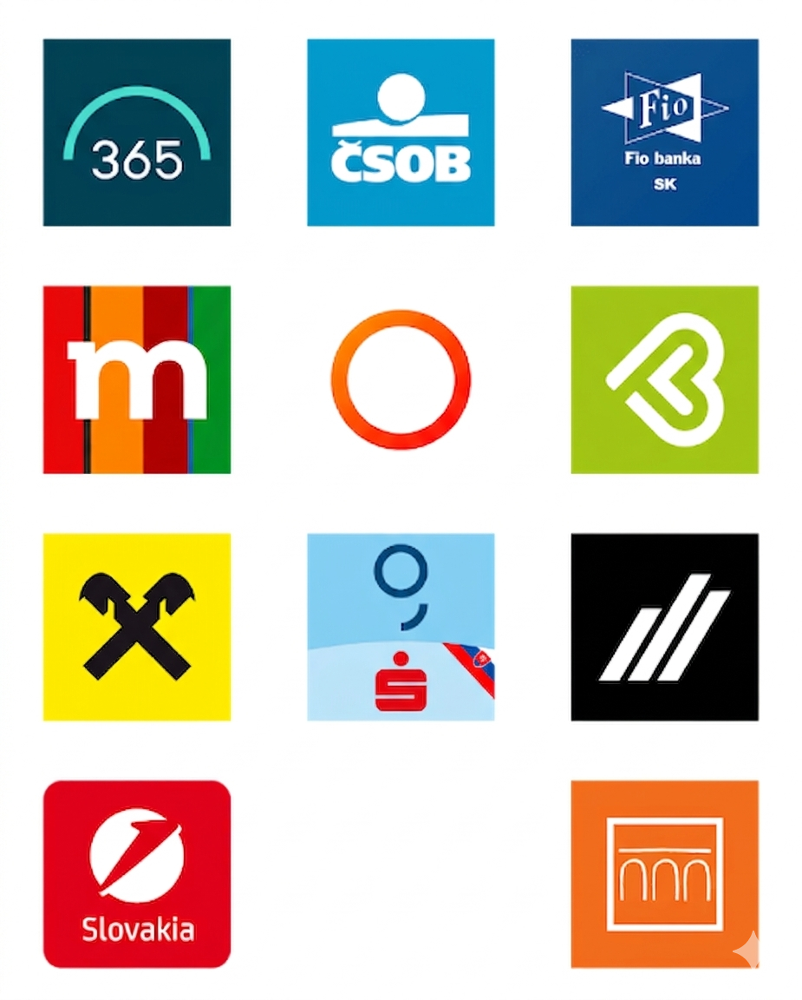

E-spoločnosť predstavuje modernú formu spoločnosti, v ktorej kľúčovú úlohu zohrávajú informačné technológie a internet.
Jej podstatou je digitalizácia údajov a nahradenie klasickej papierovej komunikácie efektívnejším elektronickým systémom. V takomto systéme môžu občania jednoduchšie komunikovať so štátom, nakupovať v digitálnom prostredí a vzdelávať sa online. Takéto spoločnosti výrazne šetria čas a búrajú geografické bariéry pri práci či štúdiu. Úspešné fungovanie e-spoločnosti však vyžaduje nielen kvalitné internetové pripojenie, ale aj vysokú úroveň kybernetickej bezpečnosti.
Dôležitým faktorom je tiež digitálna gramotnosť obyvateľstva, aby nikto nezostal izolovaný od moderných služieb. Digitalizácia sveta je nezanedbateľnou súčasťou budúcnosti, no prináša aj potrebu chrániť sa pred jej hrozbami.
E-learning je moderná forma online vzdelávania, ktorá pomocou počítačov či mobilov umožňuje študovať kedykoľvek a odkiaľkoľvek. V praxi sa s ním stretávame denne, či už pri učení jazykov cez aplikáciu Duolingo, absolvovaní odborných kurzov na platformách ako Coursera, alebo pri povinných firemných školeniach bezpečnosti práce.
Súčasťou e-learningu je v dnešnej dobe aj AI, ktorá funguje ako osobný doučovateľ dostupný 24 hodín denne, ktorý dokáže študentovi okamžite vysvetliť nejasnosti či vygenerovať materiály na učenie.
AI navyše analyzuje tempo človeka a prispôsobuje mu študijný plán na mieru – slabším žiakom automaticky vygeneruje viac precvičovania a pokročilých posunie vpred.
Pre tvorcov kurzov a učiteľov je zasa obrovským pomocníkom, pretože im pomáha vytvárať testy, generovať texty alebo dokonca tvoriť videá s virtuálnymi lektormi. E-learning sa tak vďaka umelej inteligencii mení zo statického čítania obrazovky na živý, interaktívny a vysoko personalizovaný zážitok.
E-shop je webová stránka alebo aplikácia, ktorá umožňuje nakupovať a predávať tovary alebo služby cez internet. Pre zákazníka predstavuje pohodlný spôsob nákupu z domu a pre obchodníka zasa možnosť predávať nonstop bez geografických obmedzení.

E-bank (alebo elektronické bankovníctvo / internet banking) je digitálna služba, ktorá umožňuje zákazníkom spravovať svoje financie a vykonávať bankové operácie online bez nutnosti návštevy kamennej pobočky. Funguje nonstop prostredníctvom webového prehliadača alebo mobilnej aplikácie.
V praxi to funguje tak, že namiesto čakania v rade na pobočke sa bezpečne prihlásite do svojho účtu, kde môžete okamžite realizovať platby alebo kontrolovať zostatok.